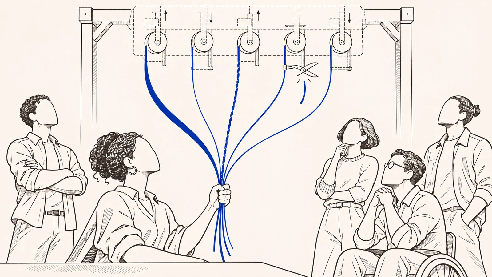

What exactly did you buy?Governed enjoyment bundle
An item in a game is not just an image. It does something in matches, other players can see it, it counts toward your reputation and it says something about who you are in that world. A rare skin, for example, looks good, but it also shows how long you have been playing and which group you belong to.
All of that, taken together, is what you bought. And each of those parts depends on rules the platform adjusts over time. These rules decide what stays visible, in what order things appear, which signs count as achievement and what happens to anyone who breaks a rule.
Where it comes from
The IOC does not behave as a “good” merely by virtue of an isolated functional utility, but as a functional and semiotic bundle, in which enjoyment depends on operations of public legibility and collective recognition.p. 252
PT
O OIC não se comporta como “bem” apenas por uma utilidade funcional isolada, mas como feixe funcional e semiótico, em que a fruição depende de operações de legibilidade pública e reconhecimento coletivo.
From this operator, the object can be described as a bundle of functionalities and significations administered over the course of the relationship, coupled to permissions and limits of use, to regimes of visibility and ordering, to metrics and signs of recognition, and to mechanisms of curation and enforcement executed by design.p. 426
PT
A partir desse operador, o objeto pode ser descrito como feixe de funcionalidades e significações administradas ao longo da relação, acoplado a permissões e limites de uso, a regimes de visibilidade e ordenação, a métricas e sinais de reconhecimento, e a mecanismos de curadoria e enforcement executados por desenho.
A rare cosmetic item or a reconfigured character is valuable because it operates as a legible social sign, a marker of identity and a point of belonging within a proprietary grammar.p. 104
PT
Um item cosmético raro ou um personagem reconfigurado valem porque operam como signo social legível, marcador de identidade e ponto de pertencimento dentro de uma gramática proprietária.
Governed enjoyment bundle
A bundle is a set of threads tied together, and enjoyment is the use and benefit you get out of something. The name describes the set of uses, signs and positions that a product of this kind offers, all of them run by the platform for as long as the relationship lasts. The bundle goes hand in hand with the IOC, which is the legal name for what you bought, and that product is itself an enjoyment bundle sustained over time. That is why, of the four questions that show whether a case is of this kind, the first is which bundle was promised.
Where it comes from
[...] the definition of the Immaterial Object of Consumption as an enjoyment bundle sustained over time [...]p. 394
PT
[...] a definição do Objeto Imaterial de Consumo como feixe de fruição sustentado no tempo [...]
The first field covered by the criteria is the promised object, understood as an enjoyment bundle.p. 428
PT
O primeiro campo coberto pelos critérios é o objeto prometido, entendido como feixe de fruição.
Enjoyment ceases to be a simple initial enablement and becomes a position sustained within the ecosystemp. 426
PT
A fruição deixa de ser simples habilitação inicial e passa a ser posição sustentada no ecossistema

Where it comes from
Is the bundle's value stored, or does it flow?
Money kept in a drawer is stock. It just sits there, and tomorrow it is still money. Water running through a pipe is flow, because it only reaches the tap while someone keeps the system running.
The bundle's value is like the water. It is not stored away in a corner that is yours alone. It exists while it flows, with servers on, a connection and an environment kept up every day. If the service goes down, the item is still in your account, but at that moment it is useless, because the place where it works has stopped.
Where it comes from
The use value of the bundle, in this condition, is not stock, it is flow. It requires continuity of servers, institutional connectivity and maintenance of the environment.p. 409
PT
O valor de uso do feixe, nessa condição, não é estoque, é fluxo. Ele exige continuidade de servidores, conectividade institucional e manutenção do ambiente.
When the service becomes unavailable, it is not only access that fails, but the virtual content itself loses immediate usefulness, because the environment that makes it enjoyable stops operating.p. 409
PT
Quando o serviço apresenta indisponibilidade, não é apenas o acesso que falha, mas o próprio conteúdo virtual perde utilidade imediata, porque o ambiente que o torna fruível deixa de operar.
What are the threads of the bundle?
The bundle has several threads, and it is worth looking at each one. There are the permissions and limits of use, which set what you can do. There is what stays visible and in what order, which decides what others see. There are the metrics and signs of recognition, such as level, rarity and badges. And there are curation and penalties, applied through the very design of the environment.
A change to a single thread can strike at the core of what you bought. Access remains, the account remains, the item's name remains, and yet what you had may have been hollowed out. That is why checking only whether the item is still there is not enough.
Where it comes from
Passage already quoted abovep. 426
It requires identifying which central functions organize the legitimate expectation of enjoyment and, consequently, delimiting which alterations can affect the core of the object even when the formal continuity of access is preservedp. 428
PT
Exige identificar quais funções centrais organizam a expectativa legítima de fruição e, por consequência, delimitar quais alterações podem atingir o núcleo do objeto mesmo quando a continuidade formal do acesso é preservada
The consumer remains formally “inside” the ecosystem, still has the account, still sees the object, can still access the platform. Even so, the enjoyed utility may be substantially downgradedp. 635
PT
O consumidor continua formalmente “dentro” do ecossistema, continua com a conta, continua vendo o objeto, continua podendo acessar a plataforma. Ainda assim, a utilidade fruída pode ser substancialmente rebaixada
What does a skin need from the game in order to work?
A skin is not just an image pasted onto a character. Some change shape during the match itself, with transformations, effects and animations. That only happens if the game can still render models, effects, animations and screens, which are rebuilt with every update.
The look, the way others read it and the transformation happen all over again in each match, like a repeated performance. So what you bought was not a static file. It was a position of use that only comes to life while the environment keeps working in a certain way.
Where it comes from
The consumer does not buy merely an “image” attached to the character. They acquire a position of enjoyment that is only realized if the game environment remains able to render models, effects, animations and interfaces that are reconfigured with each cycle of patches and system adjustmentsp. 439
PT
O consumidor não compra apenas uma “imagem” acoplada ao personagem. Ele adquire uma posição de fruição que só se realiza se o ambiente do jogo continuar capaz de renderizar modelos, efeitos, animações e interfaces que são reconfigurados a cada ciclo de patches e ajustes do sistema
This is what happens with skins, especially those structured as evolving models that change shape during the match itself.p. 439
PT
É o que ocorre com skins, em especial com aquelas estruturadas como modelos evolutivos que mudam de forma durante a própria partida.
The form, the visual reading, the logic of transformation and the aesthetic experience happen as a performance repeated in each match.p. 439
PT
A forma, a leitura visual, a lógica de transformação e a experiência estética acontecem como desempenho repetido em cada partida.
Can you lose what you paid for without losing the item?
Since the bundle's value flows rather than being stored, losing part of it can mean losing what you paid for, even while the item is still in your account.
An object may go on existing and still no longer be what was bought. Seeing the bundle is what makes that loss visible, and it lets you tell apart, by a clear criterion, normal change from the kind of worsening that matters to the law, even when access is still in place.
Where it comes from
Passage already quoted abovep. 409
An object may continue to exist and, even so, no longer be, in a legally relevant sense, what was acquired.p. 795
PT
Um objeto pode continuar existindo e, ainda assim, já não ser, em sentido jurídico relevante, aquilo que foi adquirido.
It stabilizes a grammar for identifying the core of the promised enjoyment bundle and distinguishing, by controllable criteria, between ordinary modulations of the regime and significant, legally relevant degradations, even when nominal access persists.p. 426
PT
Ela estabiliza gramática para identificar o núcleo do feixe de fruição prometido e distinguir, por critérios controláveis, entre modulações ordinárias do regime e degradações significativas juridicamente relevantes, inclusive quando o acesso nominal persiste.
Does a list of features in the ad already form a bundle?
A nice list of features in an ad does not make a bundle. The bundle is what was actually promised and used, not what appears in a slogan.
Nor is every fluctuation in the service a loss. Updates, screen tweaks, anti-cheating measures, routine moderation and passing glitches are part of a game's life. What matters is a serious and lasting worsening at the core of the bundle.
Where it comes from
The criterion is not satisfied by ornamental lists of functionalities or by generic advertising slogans.p. 428
PT
O critério não se satisfaz com listas ornamentais de funcionalidades nem com slogans publicitários genéricos.
The fourth limit covers ordinary variations of the ecosystem that do not constitute relevant and persistent degradation of the bundle, such as updates, interface adjustments, anti-abuse measures, regular moderation and isolated instabilities.p. 434
PT
O quarto limite abrange variações ordinárias do ecossistema que não configuram degradação relevante e persistente do feixe, como atualizações, ajustes de interface, medidas antiabuso, moderação regular e instabilidades pontuais.
What can you demand?
If it changes, it must keep the value it hadIf it changes, it must keep the value it had
- When does an update take away the function of what you bought?
When the platform changes the experience in a way that genuinely worsens, hollows out or diverts the function that led you to buy. That is the case with an item that, after an adjustment, is still in your inventory but has become so weak it no longer has a reason to exist, or a feature that let you do something and was taken away.
You can still be in the game, with your account, seeing the item and logging in whenever you like, and still have lost what mattered most. Keeping something working is not the same as keeping its value.
- What must the platform preserve in the item?
The platform must preserve, in substance, the role the item had in your experience. That includes what it does, the relationship it creates with other players and, when this matters to the law, what it means.
- How can you show what changed in the item's usefulness?
It helps to show what usefulness the item had before, what changed, what the concrete impact of the change was and why the compensation offered, if any, is not enough.
- What solution can restore the lost usefulness?
First of all, you can ask for the function to come back. That can mean undoing the change when it is technically possible, swapping the item for something equivalent or correcting the way the update was made. Money should not be the automatic answer. Depending on the case, the loss can be treated as a quality defect of the product or the service, which is the name the law gives to the problem that makes something less useful than it should be.
- Does this mean the game can never change?
The platform can update the game, and nobody demands that the item stay identical forever or that the game stand still. Many changes really are the natural evolution of the environment. The problem is a change that seriously worsens what you bought and leaves you to bear the cost, with no restoration to match.
Where it comes from
Whenever the platform alters the experience so as to substantially degrade, empty or divert the function that justified the acquisition, there will be a rupture of functional value equivalence.p. 745
PT
Sempre que a plataforma alterar a experiência de modo a degradar, esvaziar ou desviar substancialmente a função que justificou a aquisição, haverá ruptura da equivalência de valor funcional.
The strength of the criterion appears sharply in cases such as removals of relevant functionalities, nerfs that empty acquired utilityp. 637
PT
A força do critério aparece com nitidez em hipóteses como remoções de funcionalidades relevantes, nerfs que esvaziam utilidade adquirida
Passage already quoted abovep. 635
The corresponding duty of supply is to preserve, in substantial terms, the functional, relational and, when legally relevant, symbolic role of the object in the consumer's experience.p. 745
PT
O dever de fornecimento correspondente é o de preservar, em termos substanciais, o papel funcional, relacional e, quando juridicamente relevante, simbólico do objeto na experiência do consumidor.
The minimum required proof calls for demonstration of the utility previously incorporated into the bond, of the change that occurred, of the concrete functional impact of the alteration and of the insufficiency of any restoration offered.p. 745-746
PT
A prova mínima exigível requer demonstração da utilidade anteriormente incorporada ao vínculo, da mudança ocorrida, do impacto funcional concreto da alteração e da insuficiência de eventual recomposição oferecida.
The possible legal qualification tends to fall on a defect in the quality of the product or servicep. 746
PT
A qualificação jurídica possível tende a recair em vício de qualidade do produto ou serviço
The possible institutional consequence prioritizes functional restoration, technical reversal when feasible, equivalent replacement and correction of the form of updating, instead of mere automatic monetization of the loss.p. 746
PT
A consequência institucional possível prioriza recomposição funcional, reversão técnica quando viável, substituição equivalente e correção da forma de atualização, em vez de mera monetização automática da perda.
This does not mean requiring perfect identity between the earlier and later versions, nor imposing a freeze on the service.p. 730
PT
Isso não significa exigir identidade perfeita entre versão anterior e posterior, nem impor congelamento do serviço.
What the parameter rejects is not change itself, but its instrumentalization to transfer to the consumer the cost of reconfigurations that destroy or significantly downgrade the acquired utility without compatible restoration.p. 730
PT
O que o parâmetro recusa não é a mudança em si, mas sua instrumentalização para transferir ao consumidor o custo de reconfigurações que destroem ou rebaixam significativamente a utilidade adquirida sem recomposição compatível.
Nerfs, removals, reworks, migrations, rule changes, reordering of access, reconfiguration of interfaces and suppression of functionalities are usually narrated as the natural evolution of the environment. In many cases, they may in fact be just that.p. 730
PT
Nerfs, remoções, reworks, migrações, mudanças de regra, reordenação de acessos, reconfiguração de interfaces e supressão de funcionalidades costumam ser narrados como evolução natural do ambiente. Em muitos casos, de fato, podem sê-lo.
Where on the Path does it matter most?
If the value is in the flow, who decides when the flow changes?
What makes up the bundle?
The IOC is described as a bundle, functional and semiotic. It is the set of functionalities and significations administered over the course of the relationship, linked to permissions and limits of use, to regimes of visibility and ordering, to metrics and signs of recognition and to mechanisms of curation and enforcement executed by design. The positions that compose it are accessible through an institutional identifier and an infrastructure that stabilizes what is visible, usable and recognizable.
Where it comes from
Passage already quoted abovep. 426
The enjoyment bundle thus appears as a collection of positions accessible through an institutional identifier and an infrastructure that stabilizes what is visible, usable and recognizable in the ecosystem.p. 408-409
PT
O feixe de fruição aparece, então, como coleção de posições acessíveis mediante um identificador institucional e uma infraestrutura que estabiliza o que é visível, utilizável e reconhecível no ecossistema.
Why does the bundle matter for qualification?
Because its usefulness only materializes under conditions the supplier organizes on an ongoing basis. Use value is not stored, because it depends on the flow of supply. That is why the first field of the regime's criteria is the promised object, understood as a bundle.
Passage already quoted abovep. 252
Where it comes from
[...] the identification of a bundle of immaterial utilities that is only realized under conditions continuously organized by the supplier.p. 717
PT
[...] a identificação de um feixe de utilidades imateriais que só se realiza sob condições continuamente organizadas pelo fornecedor.
What does not count as a bundle?
Ornamental lists of features and generic advertising slogans are not enough to show the bundle. Ordinary variations that do not degrade the bundle in a relevant and persistent way are also excluded, such as updates, interface adjustments, anti-abuse measures, routine moderation and isolated instabilities.
In the situations
Where can you study it in depth?
In the chapter The Immaterial Object of Consumption, on the jurist's path.
Concept
Governed enjoyment bundle
Function in the regime
It always appears alongside the IOC. The IOC names the legal category. The bundle names what that category contains, the governed enjoyment that constitutes what was acquired. The thesis itself defines one by the other when it speaks of the "definition of the Immaterial Object of Consumption as an enjoyment bundle sustained over time"p. 394.
Where it lives in the thesis
- Abstract and keywords
- 5.1.2
- 5.1.2.3 (p. 428-434)
- 5.1.2.4
- 7.1.1.1 (p. 717)
In the three readings
- The consumer's pathdescribes the object
- The judge's pathqualification of the object and of the enjoyment regime
- The regime's pathqualifies the immaterial product